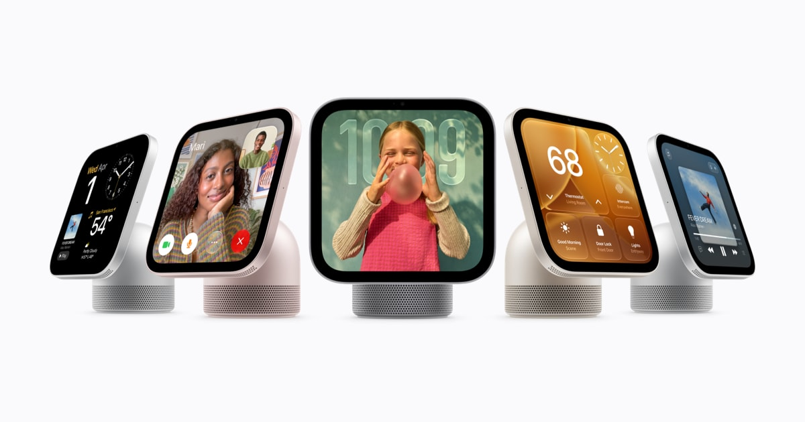
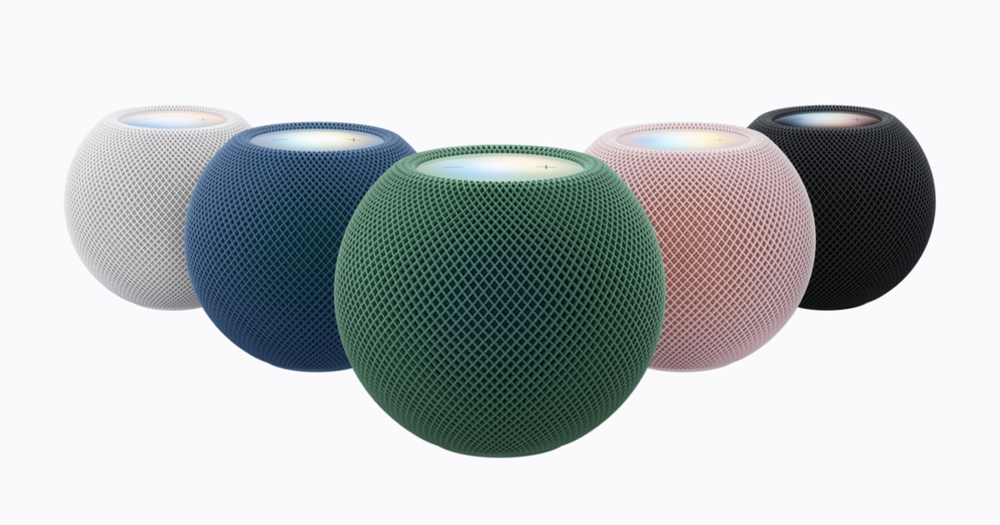

科技產品 T1

HomeView官方產品圖，非本站實測；首波市場與語言有限制。 Apple Newsroom
Apple 發布 HomeView 智慧家庭螢幕，部分市場開放預購、十一月供貨
發佈時間
Apple／HomeView
HomeView把七吋螢幕、音訊、FaceTime及家庭控制整合在桌上或壁掛裝置，支援按家庭成員個人化。
- A18晶片、七吋Liquid Retina螢幕，可辨識最多六名使用者；個人脈絡功能需配對相容裝置。
- 美國等六國即日起預購，兩種機型美國價均為US$299；11/13供貨，新加坡另於10/15開始預購。
- Siri AI屬測試功能，首波以指定市場英文提供；歐盟未供應，台灣上市時間未公布。
完整報告收合報告
事件背景與影響
Apple把語音助理帶入共用家庭螢幕；個人資料存取與地區限制，比單純硬體規格更影響實際用途。
事件與發佈依據
Apple10/13正式公告與預購，不是發表前洩漏；官方僅日期。
收錄紀錄
9/30–10/13十四份日報窄查及同窗產品表無相同發布，首次收錄。
尚待確認
Apple官方註1寫相容iPhone或iPad可設定，WIRED稱不能以iPad設定；本文採官方並保留差異，未作實機驗證。壁掛支架另售。
相關實體與概念
Apple、HomeView、Siri AI、Apple Intelligence、智慧家庭、個人資料
科技產品 T2

第二代官方產品圖；Siri AI尚待後續軟體更新。 Apple Newsroom
HomePod mini 2 開放預購，新增 S10 與環繞音效，Siri AI 尚待更新
發佈時間
Apple／HomePod mini 2
新款小型喇叭加入S10晶片、Sound Glow燈效與四喇叭家庭劇院配置，但宣傳中的Siri AI不會隨開箱即提供。
- 美國價US$149，五種配色，10/13起預購、10/30開始供貨。
- 與第四代Apple TV 4K搭配，可用符合條件的四個HomePod喇叭組成環繞音效；Sound Glow依音樂產生燈效。
- Siri AI將透過後續軟體更新在指定英文市場推出，個人脈絡另需支援Apple Intelligence的配對裝置。
完整報告收合報告
事件背景與影響
購買前須區分已公布硬體功能與尚未交付的AI軟體，避免把未來更新當現成功能。
事件與發佈依據
Apple當日新硬體公告；10/30供貨與未來軟體更新分開記錄。
收錄紀錄
最近十四份日報與同窗產品表無本次第二代產品發布，不以舊款比較文作新事件。
尚待確認
不同市場的語言與功能支援不能互推；官方未公布Siri AI更新的確切日期，本文不承諾台灣可用時間。
相關實體與概念
HomePod mini 2、S10、Sound Glow、Apple TV 4K、Siri AI
科技產品 T3
Google Play 開始讓成年使用者以一般帳號執行自製 App，先在部分市場推出
發佈時間
Google／Google Play、AI Studio個人App
使用者可透過AI Studio建立Android App，再以一般Google帳號在自己的裝置執行，不必先申請專業開發者帳號。
- 今天起向包含美國的部分市場、18歲以上使用者逐步推出；個人App與公開商店目錄分開。
- 親友分享預計未來數月提供；若要公開發行，仍需開發者帳號並符合安全與品質審查。
- 同次公告新增Ask Play的App比較；Game Finder先在美國英文推出，Play in Gemini則仍是即將推出。
完整報告收合報告
事件背景與影響
個人化軟體的門檻降低，但私人執行與公開商店上架仍是兩套不同權限和審查流程。
事件與發佈依據
官方10/13更新，published_time為17:00UTC。
收錄紀錄
最近十四份日報窄查及同窗產品表無本次個人App供應變更，首次收錄。
尚待確認
不是所有國家及帳號立即可用，也不代表AI產生的程式免除安全風險；台灣供應不能由美國推出推定。
相關實體與概念
Google Play、Google AI Studio、Android、個人App、Ask Play、Game Finder
科技產品 T4
Facebook 推出 Your Algorithm，讓使用者以自然語言調整推薦內容
發佈時間
Meta／Facebook Your Algorithm
使用者可在三點選單管理Feed與Reels想看或不想看的主題，也能用自己的文字補充偏好。
- Your Algorithm可新增與管理主題，系統依文字偏好調整推薦。
- Interested／Not interested之後可能追問原因，讓回饋更具體。
- Meta稱排名會在同次使用期間即時適應，屬公司功能聲明。
完整報告收合報告
事件背景與影響
推薦系統增加明示意圖輸入，讓控制不只依賴按讚或觀看行為；仍不等於取消演算法排序。
事件與發佈依據
Meta首次metadata10/13 16:00:29UTC，不採16:03更新時間。
收錄紀錄
最近十四份日報與產品表無Facebook本次自然語言推薦控制，與Muse模型發布不同。
尚待確認
官方未列完整市場與帳號推出時程；尚未獨立測試偏好遵循程度，不能承諾所有不想看的內容均消失。
相關實體與概念
Meta、Facebook、Feed、Reels、推薦系統、自然語言回饋
全球焦點 1
續報｜教宗良十四世完成肺部手術，梵蒂岡確認肺腺癌診斷
發佈時間
梵蒂岡表示手術成功、無併發症，診斷為肺腺癌；後續療程仍待檢驗。
- 醫師切除右肺下葉，教宗術後回到病房。
- 更多檢驗與是否需要其他治療尚待說明。
完整報告收合報告
事件背景與影響
實際治療結果可能影響公開行程；確診與病期、預後不能混為一談。
事件與發佈依據
10/13實際手術與晚間醫療公報；不是原頁早晨手術預告的更新時間。
收錄紀錄
10/12已收錄肺結節手術安排；新增完成右肺下葉切除、確認診斷及術後說明。
尚待確認
病期尚未公布，不據手術成功推論已治癒；本篇是新聞紀錄，不提供個人醫療建議。
相關實體與概念
Leo XIV、Vatican、Gemelli Hospital、公開行程
全球焦點 2
IMF 上調今年全球成長預測至百分之三點一，警告能源、債務與 AI 風險
發佈時間
IMF預測2026全球成長3.1%、2027為3.4%，但各國承受能源衝擊與受益AI投資的程度不同。
- 今年成長預測較七月3.0%略升；官方估全球通膨今年4.7%。
- 中東緊張、借貸成本與AI預期修正均是風險，生產力進步也可能帶來上行機會。
完整報告收合報告
事件背景與影響
總體成長數字掩蓋國家間分化；政策緩衝減少，使新的供應衝擊更難吸收。
事件與發佈依據
AP03:16:27UTC首發，官方10/13在曼谷發布十月WEO。
收錄紀錄
最近十四份日報沒有本次十月展望，首次收錄，不沿用一月或七月舊版。
尚待確認
這是附條件預測，不是已實現GDP；官方主報告頁仍回傳預告版，數字以當日官方發布中心核對。
相關實體與概念
IMF、WEO、全球成長、能源、AI投資、財政緩衝
全球焦點 3
續報｜澤倫斯基稱基輔遭飛彈攻擊前未獲夥伴預警，美方否認停止情報分享
發佈時間
烏方稱夥伴未事先警告基輔來襲飛彈，川普則說美國仍在分享情報。
- 澤倫斯基未指明所有涉及的夥伴。
- 川普公開表示仍提供協助與情報，兩種聲明需分開保留。
完整報告收合報告
事件背景與影響
預警有助防空與平民避難；未獲一次警告不等同整個情報合作已停止。
事件與發佈依據
AP10/13 11:21:28UTC；定位週二新攻擊與當日回應。
收錄紀錄
10/13已收錄週一能源設施攻擊；新增週二五枚彈道飛彈與情報預警爭議。
尚待確認
未獲預警的原因未獨立確認，不能推論美方故意中止支援。
相關實體與概念
Ukraine、Russia、Kyiv、Volodymyr Zelenskyy、情報預警
全球焦點 4
續報｜保加利亞外海兩艘商船遭攻擊，一艘沉沒並啟動搜救
發佈時間
保加利亞稱兩船在外海遭襲，Dignity沉沒，Chelsea 3船員撤離，搜救持續。
- Dignity有五人獲救、十一人仍在搜尋；失蹤不等於確認死亡。
- Chelsea 3十五名船員撤離；官方尚無確切攻擊者證據。
完整報告收合報告
事件背景與影響
黑海航運風險延伸至鄰近北約國家的水域，海上救援與歸責都需查證。
事件與發佈依據
AP10/13 05:59:19UTC，保加利亞政府週二通報。
收錄紀錄
10/7收錄黑海Aframax Rio油輪事件；本次是不同日期、海域與船隻的新攻擊。
尚待確認
不同早期報導船名及傷亡可能變動，採AP當日政府通報，不自行確定肇事方。
相關實體與概念
Bulgaria、Black Sea、Dignity、Chelsea 3、商船安全
全球焦點 5
續報｜剛果伊波拉確診突破九千例，官方通報疫情擴及七省
發佈時間
剛果衛生部通報9066例確診、4381人死亡，65個健康區受影響，社區傳播仍令人擔憂。
- 新報告涵蓋七省，另記錄88例新確認。
- 累計死亡不是當日新增，也不能直接當精確感染致死率。
完整報告收合報告
事件背景與影響
疫情擴及更多社區，治療與追蹤能力承壓；跨境風險不能只看累計總數。
事件與發佈依據
AP10/13 17:24:48UTC，政府週二發布新統計。
收錄紀錄
10/3收錄逾8300例及4018死、10/7收錄肯亞輸入病例；新增剛果週二統計與擴散範圍。
尚待確認
通報受偵測能力及延遲影響；未確認病例與漏報不能由這份數字直接估算。
相關實體與概念
DR Congo、Ebola、社區傳播、健康區、公共衛生
全球焦點 6
巴基斯坦旁遮普省客運列車出軌，至少五死三十五傷
發佈時間
由Karachi前往Peshawar的列車在Sher Shah出軌，救援人員疏散傷者並送醫。
- 警方與鐵路發言人通報至少五死、三十五傷。
- 早期版本為四死三十傷，後續數字修訂不相加。
完整報告收合報告
事件背景與影響
事故再度凸顯鐵路安全壓力，但不能在調查前把長期設備問題當成此次已確認原因。
事件與發佈依據
AP10/13 04:04:03UTC，週二凌晨事故。
收錄紀錄
最近十四份日報無Sher Shah這起事故，首次收錄。
尚待確認
事故原因與最終傷亡仍待調查，本文不推測蓄意破壞或特定設備故障。
相關實體與概念
Pakistan、Punjab、Sher Shah、Pakistan Railways、鐵路安全
全球焦點 7
美國駐希臘大使 Guilfoyle 辭職，否認不當行為指控
發佈時間
白宮公開要求Kimberly Guilfoyle辭職，她隨後宣布離任，並表示將為自己辯護。
- 辭職發生於媒體對其不當行為的連續報導後。
- Guilfoyle否認指控，辭任不是司法有罪判決。
完整報告收合報告
事件背景與影響
使館領導異動影響外交運作；指控、行政決定與法律責任必須分開。
事件與發佈依據
AP10/13 14:00:03UTC首發，週二白宮要求離職與當日正式辭任。
收錄紀錄
最近十四份日報無這次辭任事件，不把先前指控重刊當新進展。
尚待確認
被指行為仍有爭議，不把報導中的指控當作法院認定事實。
相關實體與概念
United States、Greece、Kimberly Guilfoyle、外交人事
全球焦點 8
阿根廷請求國際海洋法法庭暫停福克蘭油田開發，英國反對
發佈時間
阿根廷要求ITLOS停止爭議島嶼外海Sea Lion開發，英方質疑管轄與施壓方式。
- 阿方稱目的為保全主權權利，項目涉及英國及以色列業者。
- 英方拒絕阿方立場；目前沒有法庭已命令停工的確認。
完整報告收合報告
事件背景與影響
能源開發利益使長期領土爭議進入新的法律程序，但提出申請不代表法院已支持。
事件與發佈依據
AP10/13 14:55:26UTC，阿根廷週二公布臨時措施請求。
收錄紀錄
最近十四份日報無Sea Lion此次法庭申請，不以舊主權爭議補位。
尚待確認
管轄與主權均有爭議，本文不以任何一方說法取代法律裁決。
相關實體與概念
Argentina、United Kingdom、Falkland Islands、Malvinas、ITLOS、Sea Lion
全球焦點 9
續報｜法國學生再度全國遊行，Greta Thunberg 到場聲援教育資源訴求
發佈時間
高中生要求改善破舊校舍與資源不足；週二遊行部分地點發生衝突，警方使用催淚氣體。
- Thunberg到巴黎北郊Paul Éluard高中支持學生。
- 法國內政部估全國16.15萬人遊行，並非本站獨立計算。
完整報告收合報告
事件背景與影響
持續教育訴求與公共秩序爭議交織，新的跨國聲援提高運動能見度。
事件與發佈依據
AP10/13 13:35:48UTC，定位週二新遊行與Saint-Denis到訪。
收錄紀錄
10/2收錄抗議擴散、10/9收錄警方衝突；新增10/13全國行動及國際聲援，不重算累計逮捕。
尚待確認
人數為官方估計；全國不同地點的警民互動不宜一概描述為同樣暴力程度。
相關實體與概念
France、Saint-Denis、Greta Thunberg、教育資源、學生抗議
全球焦點 10
F1 與盧安達簽十年協議，預計二〇三〇年代初重返非洲
發佈時間
F1宣布African Grand Prix將於盧安達舉行，賽道位於Kigali東南方Bugesera，仍需建設。
- 協議為十年，目標在2030年代初加入賽曆。
- 首場確切日期、施工里程碑與賽事規劃仍待公布。
完整報告收合報告
事件背景與影響
若落實，將是1993年後F1首次重返非洲，也是一項長期體育、觀光與基礎設施投資。
事件與發佈依據
F1官方10/13 09:18UTC公告，保留分鐘精度。
收錄紀錄
最近十四份日報無本次十年協議，首次收錄。
尚待確認
今天簽約不等於賽道完成或首場已確定；經濟效益仍是主辦方預期。
相關實體與概念
Formula 1、Rwanda、Bugesera、African Grand Prix、體育觀光
研究備註
時間、來源與後續追蹤
研究截點 2026-10-14 08:01:04（Asia/Taipei）
研究時間與範圍
研究截點：2026-10-14 08:01:04（Asia/Taipei）。全球新聞：2026-10-13 08:01:04 至 2026-10-14 08:01:04（Asia/Taipei）。科技產品：2026-09-30 08:01:04 至 2026-10-14 08:01:04（Asia/Taipei）。